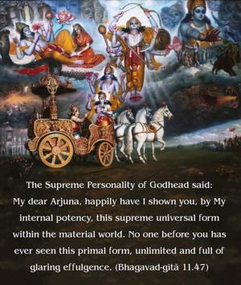
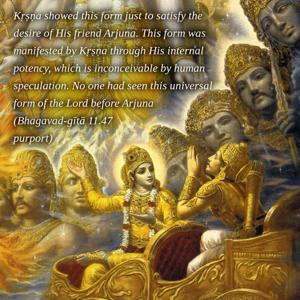
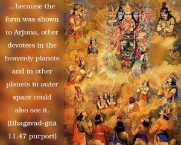

The Supreme Personality of Godhead said: My dear Arjuna, happily have I shown you, by My internal potency, this supreme universal form within the material world. No one before you has ever seen this primal form, unlimited and full of glaring effulgence.



Arjuna wanted to see the universal form of the Supreme Lord, so Lord Kṛṣṇa, out of His mercy upon His devotee Arjuna, showed His universal form, full of effulgence and opulence. This form was glaring like the sun, and its many faces were rapidly changing. Kṛṣṇa showed this form just to satisfy the desire of His friend Arjuna. This form was manifested by Kṛṣṇa through His internal potency, which is inconceivable by human speculation. No one had seen this universal form of the Lord before Arjuna, but because the form was shown to Arjuna, other devotees in the heavenly planets and in other planets in outer space could also see it. They had not seen it before, but because of Arjuna they were also able to see it. In other words, all the disciplic devotees of the Lord could see the universal form which was shown to Arjuna by the mercy of Kṛṣṇa. Someone has commented that this form was shown to Duryodhana also when Kṛṣṇa went to Duryodhana to negotiate for peace. Unfortunately, Duryodhana did not accept the peace offer, but at that time Kṛṣṇa manifested some of His universal forms. But those forms are different from this one shown to Arjuna. It is clearly said that no one had ever seen this form before.